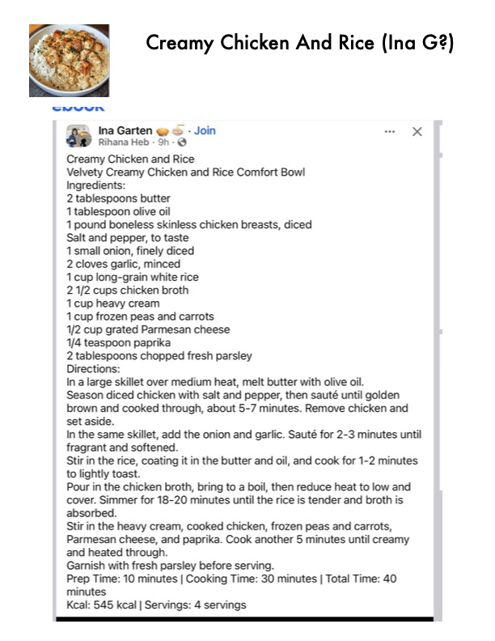

Creamy Chicken And Rice (Ina G?)

Original cookbook page 784
Ingredients
- 2 tablespoons butter
- 1 tablespoon olive oil
- 1 pound boneless skinless chicken breasts, diced
- Salt and pepper, to taste
- 1 small onion, finely diced
- 2 cloves garlic, minced
- 1 cup long-grain white rice
- 2 1/2 cups chicken broth
- 1cup heavy cream
- 1 cup frozen peas and carrots
- 1/2 cup grated Parmesan cheese
- 1/4 teaspoon paprika
- 2 tablespoons chopped fresh parsley
Instructions
- In a large skillet over medium heat, melt butter with olive oil Season diced chicken with salt and pepper, then sauté unti brown and cooked through, about 5-7 minutes. Remove ch set aside. In the same skillet, add the onion and garlic. Sauté for 2-3 1 fragrant and softened. Stir in the rice, coating it in the butter and oil, and cook for ° to lightly toast. Pour in the chicken broth, bring to a boil, then reduce heat ' cover. Simmer for 18-20 minutes until the rice is tender and absorbed. Stir in the heavy cream, cooked chicken, frozen peas and c Parmesan cheese, and paprika. Cook another 5 minutes un and heated through. minutes
Recipe #784 from collection